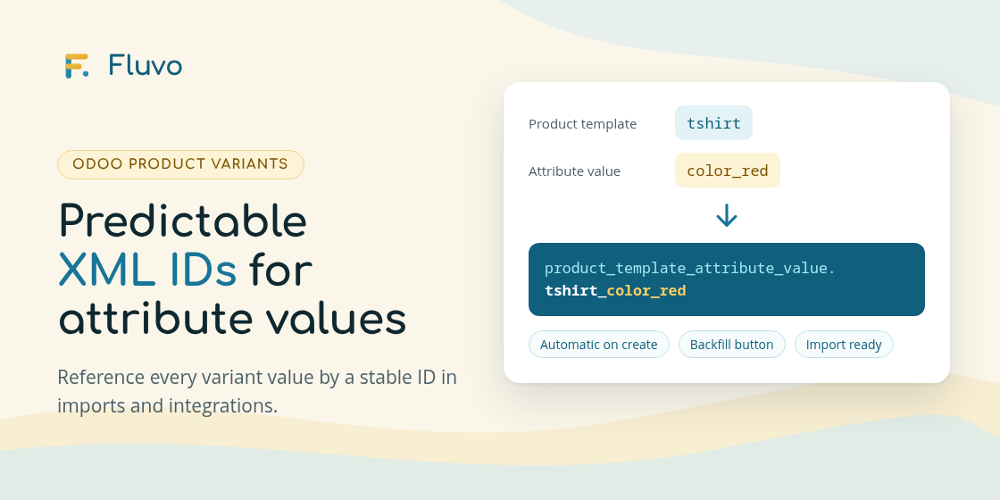
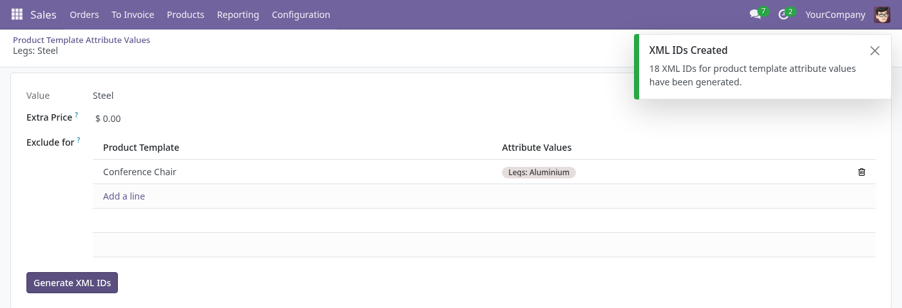
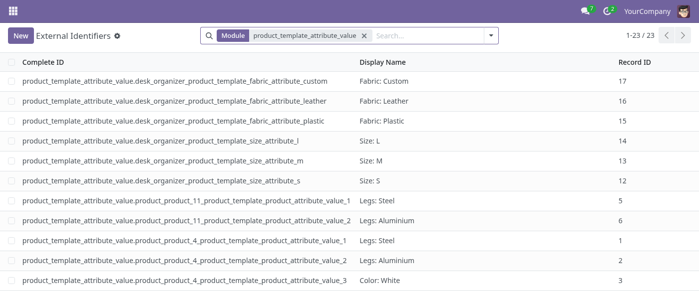

Reference every product variant value by a stable external ID, in imports, exports and integrations, without looking up database ids.

Point to a variant value with
product_template_attribute_value.<id> in CSV
or Excel imports, for extra prices, exclusions or variant
combinations.
The ID is built from the XML IDs of the product template and the attribute value, so it is the same in every database: test, staging and production.
Install the module and every new attribute value on a product gets its XML ID. One button generates the missing ones for existing products.
When Odoo adds an attribute value to a product template, for example when you add Size: L to a Desk Organizer, the module gives the new record the XML ID:
product_template_attribute_value.<template>_<value> product_template_attribute_value.desk_organizer_product_template_size_attribute_l
Go to Sales > Configuration > Product Template Attribute Values, open any record and click Generate XML IDs. All attribute values without an XML ID get one, and Odoo tells you how many were created.

The XML IDs are regular external identifiers, in the
product_template_attribute_value module. Search them in
Settings > Technical > External Identifiers, or export
them with the ID column of any export.
